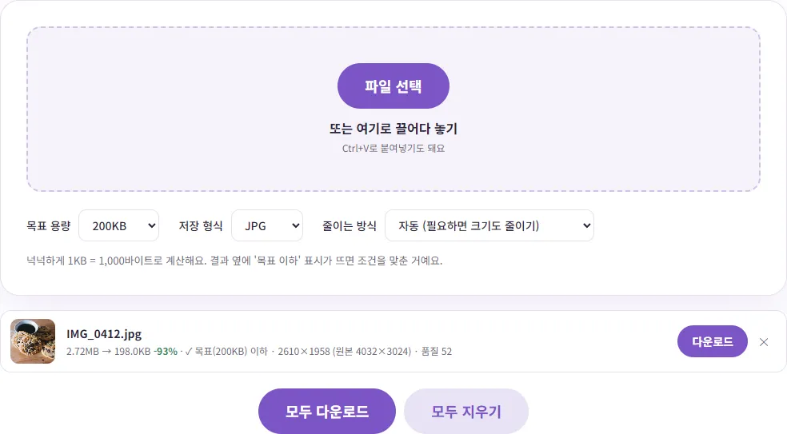
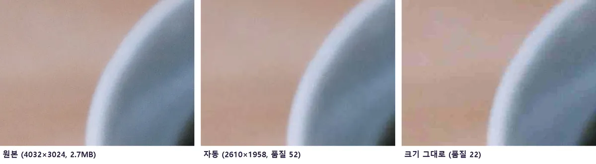
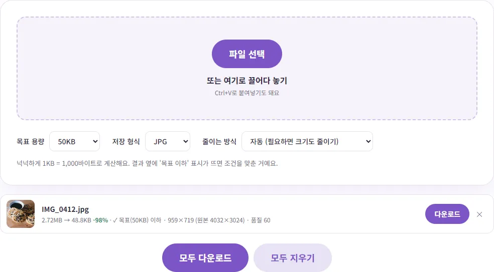

'사진은 ○○KB 이하만 올릴 수 있어요' 오류, 어떻게 해결할까요?
원서 접수나 민원 신청 마지막 단계에서 사진을 올렸더니 '파일 용량이 너무 큽니다'라는 말만 나오고 막혀 버린 적 있으시죠? 이 글에서는 이런 조건이 왜 있는지, KB와 MB를 어떻게 계산하는지, 그리고 사진이 흐려지지 않게 용량을 딱 맞추는 순서를 실제로 해 본 숫자와 함께 알려 드릴게요.
왜 사이트마다 'KB 이하' 조건이 있을까요?
요즘 휴대폰 사진은 한 장에 보통 몇 MB씩 해요. 이 글을 쓰면서 테스트에 쓴 4032×3024 크기 JPG 사진도 2,720,208바이트, 약 2.7MB였어요. 그런데 원서나 신청서에 붙는 증명사진은 화면이나 서류에 아주 작게 보이기 때문에 그만큼 큰 파일이 필요 없어요. 접수하는 쪽에서는 지원자 수만큼 사진이 쌓이니 저장 공간과 처리 속도를 생각해서 용량 상한을 두는 경우가 많고, 느린 인터넷에서도 업로드가 끝나도록 일부러 작게 정해 두기도 해요.
그러니 '용량을 줄이라'는 건 사진을 망가뜨리라는 뜻이 아니라, 쓰임새에 맞는 크기로 다시 저장하라는 뜻에 가까워요. 순서만 알면 얼굴이 뭉개지지 않게 충분히 맞출 수 있어요.
KB와 MB, 1000으로 나눌까 1024로 나눌까
용량 단위가 헷갈리는 데는 이유가 있어요. 국제 단위 기준으로 킬로(k)는 1000을 뜻해서 1KB는 1,000바이트예요. 그런데 컴퓨터 분야에서는 오래전부터 1,024바이트를 1KB라고 불러 왔고, 이를 구분하기 위해 국제전기기술위원회(IEC)가 1,024바이트 단위에 KiB(키비바이트)라는 별도 이름을 정했어요. 미국 국립표준기술연구소(NIST)도 이 구분을 안내하고 있어요. 하지만 실제로는 지금도 두 가지가 섞여 쓰이고, 윈도우 파일 탐색기처럼 1,024로 나눈 값을 그냥 'KB'라고 보여 주는 곳도 많아요.
| 조건 | 1KB = 1,000바이트로 볼 때 | 1KB = 1,024바이트로 볼 때 |
|---|---|---|
| 100KB 이하 | 100,000바이트 | 102,400바이트 |
| 200KB 이하 | 200,000바이트 | 204,800바이트 |
| 500KB 이하 | 500,000바이트 | 512,000바이트 |
| 1MB 이하 | 1,000,000바이트 | 1,048,576바이트 |
보시다시피 1,000으로 계산한 쪽이 조금 더 작아요. 그래서 사이트가 어느 쪽으로 계산하는지 모를 때는 1,000 기준에 맞춰 두면 양쪽 모두 통과해요. 벤토툴 사진 용량 KB 맞추기는 이런 이유로 목표를 1KB = 1,000바이트로 계산해요.
한 가지 알아 둘 점: 이 도구는 목표도, 결과 줄에 보이는 용량도 같은 1,000 기준으로 계산해요. 200KB 목표로 만든 198,009바이트짜리 파일은 화면에 '198.0KB'로 보여요. 같은 파일을 윈도우 탐색기에서 보면 1,024로 나눈 값이라 약 193KB로 더 작게 보이는데, 어느 쪽으로 계산해도 200KB 이하라는 뜻이니 안심하셔도 돼요.
사진 용량 KB 맞추기, 단계별로 따라 하기
- 사진 용량 KB 맞추기 페이지를 여세요. 회원가입이나 설치는 필요 없어요.
- '목표 용량'에서 사이트가 요구하는 값을 고르세요. 20KB부터 2MB까지 자주 쓰는 값이 있고, 목록에 없으면 '직접 입력'에 숫자를 넣으면 돼요.
- '저장 형식'은 특별한 요구가 없으면 JPG로 두세요. 접수 사이트 대부분이 JPG를 받아요.
- '줄이는 방식'은 처음에는 '자동'으로 두세요. 이유는 바로 다음 장에서 설명할게요.
- 사진을 올리면 목표 이하가 될 때까지 알아서 줄여 줘요. 결과 줄에 '✓ 목표 이하' 표시가 뜨면 '다운로드'를 누르세요.

사진은 서버로 올라가지 않고 내 브라우저 안에서 처리돼요. 증명사진처럼 개인정보가 담긴 사진을 다룰 때 이 부분이 마음 편해요. 아이폰 HEIC 사진도 바로 넣을 수 있어서, 따로 JPG로 바꾸는 단계를 건너뛸 수 있어요.
해상도를 줄일까, 화질을 낮출까
사진 용량을 줄이는 방법은 크게 두 가지예요. 하나는 가로세로 픽셀 수(해상도)를 줄이는 것, 다른 하나는 JPG 저장 품질(화질)을 낮추는 거예요. 같은 사진을 같은 200KB 목표로 두 방식 모두 해 봤어요.
- 자동: 크기를 2610×1958로 줄이고 품질 52로 저장 → 198,009바이트
- 가로세로 크기 그대로: 크기는 4032×3024 그대로, 품질을 22까지 낮춤 → 196,015바이트

용량은 거의 같은데, 화질만 많이 낮춘 쪽은 확대했을 때 매끈해야 할 부분에 네모난 얼룩이 보였어요. 반대로 크기를 적당히 줄인 쪽은 전체가 살짝 부드러워졌을 뿐 얼룩은 거의 없었어요. 증명사진이나 서류 사진은 어차피 작게 보이니, 대부분은 크기를 줄이는 쪽이 더 깨끗해요. 그래서 '자동'은 먼저 화질을 적당한 선까지만 낮춰 보고, 그래도 안 되면 크기를 단계적으로 줄여 목표 안에서 가장 좋은 화질을 찾아요.
목표가 아주 작으면 크기가 많이 줄어들어요. 같은 사진을 50KB 목표로 넣었더니 959×719로 줄어들었어요. 화면으로 보기에는 괜찮지만, 얼굴이 작게 나온 단체 사진이라면 얼굴만 남게 먼저 이미지 자르기로 필요한 부분만 남긴 뒤 줄이는 게 훨씬 선명해요.

사이트가 픽셀 크기까지 정해 놓았다면
'가로 ○○픽셀, 세로 ○○픽셀' 조건이 함께 있다면 순서를 바꾸세요. 먼저 이미지 크기 조절로 픽셀 크기를 맞추고, 그다음 KB 맞추기에서 '가로세로 크기 그대로'를 골라 용량만 줄이면 돼요. 이미 크기가 작아진 상태라 화질을 많이 낮추지 않아도 대개 목표에 들어가요. 용량 조건 없이 그냥 가볍게만 만들고 싶을 때는 이미지 용량 줄이기로 여러 장을 한 번에 압축하는 게 더 편해요.
자주 보는 조건 예시
조건은 기관과 시험마다 달라서, 가장 정확한 건 그 사이트의 접수 안내문이에요. 공식 안내에서 직접 확인한 예를 하나 들면, 외교부 여권안내 누리집의 '온라인용 사진파일 안내'는 여권 온라인 재발급 사진 파일을 이렇게 정하고 있어요.
| 항목 | 외교부 안내 내용 |
|---|---|
| 파일 크기 | 500KB 이하 |
| 파일 형식 | JPG/JPEG |
| 픽셀 크기 | 가로 413 × 세로 531 픽셀 권장 (가로 395~431, 세로 507~550 픽셀 이내만 업로드 가능) |
| 해상도 | 300dpi 권장 |
이처럼 용량만이 아니라 형식, 픽셀 크기, 촬영 시기까지 함께 정해 두는 곳이 많아요. 여권 사진은 배경을 편집 프로그램으로 지운 사진을 받지 않는다는 조건도 있으니, 용량을 맞추기 전에 사진 자체가 규격에 맞는지 먼저 보세요. 다른 시험이나 민원의 조건은 기관마다 달라요. 접수 안내문에서 '용량', '형식', '픽셀', '해상도' 네 가지를 찾아 메모해 두고 작업하면 다시 올리는 일이 줄어요.
그래도 업로드가 안 된다면
- 형식 확인: 파일 이름 끝이 .heic, .png, .webp라면 JPG만 받는 곳에서 거절될 수 있어요. 결과를 JPG로 저장했는지 보세요.
- 픽셀 범위 확인: 용량은 통과해도 가로세로 크기가 범위를 벗어나면 거절하는 곳이 있어요.
- 파일 이름 바꾸기: 일부 사이트는 한글이나 특수문자가 들어간 파일 이름에서 오류가 나기도 해요. 영문과 숫자로 바꿔서 다시 올려 보세요.
- 목표를 넉넉하게: 조건이 200KB라면 목표를 190KB 정도로 살짝 낮춰 잡으면 계산 방식 차이에도 여유가 생겨요.
- 브라우저 바꿔 보기: 그래도 안 되면 다른 브라우저로 접속하거나, 접수처 안내에 나온 권장 환경을 확인해 보세요.
증명사진을 집에서 직접 만드는 방법은 이력서 증명사진 규격과 집에서 만드는 법에, 아이폰 사진 형식 문제는 아이폰 사진(HEIC)이 PC에서 안 열릴 때에 정리해 두었어요.